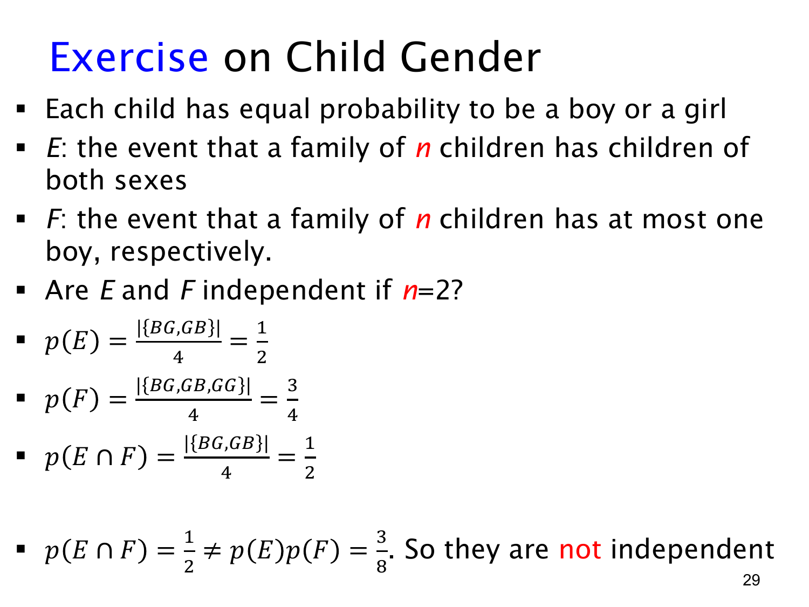

L1.9 · 第 29 页讲解原文
查看这一页课件

两个孩子的例子：包含关系导致不独立
本题采用简化的 B/G 模型：每个孩子分别以 1/2 概率对应 B 或 G，各孩子结果相互独立。对两个孩子，按出生顺序记录的样本空间是
S={BB,BG,GB,GG},
四个结果各有 1/4 概率。不能把 BG 与 GB 合成一个等可能结果，因为它们是两种不同的有序情况。
事件 E 为家庭中两种类别都有，故
E={BG,GB},p(E)=21.
事件 F 为“至多一个男孩”，包含一个或零个男孩：
F={BG,GB,GG},p(F)=43.
交集为
E∩F={BG,GB}=E,
所以 p(E∩F)=1/2，而
p(E)p(F)=21⋅43=83.
两者不相等，E 与 F 不独立。
直观原因是 E⊆F：两个孩子都有 B/G，就必然恰好一个 B，也就必然满足“至多一个 B”。知道 E 发生，会使 F 的概率从 3/4 变为 1。
注意题目中的独立层次：各个孩子的结果独立，并不保证由全部孩子结果构成的任意两个事件也独立。必须具体计算事件概率与交集概率。